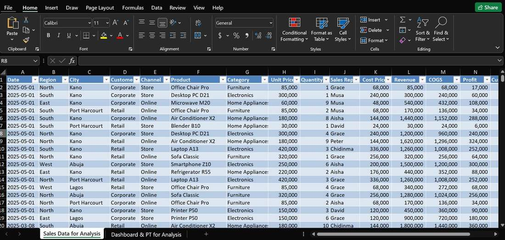
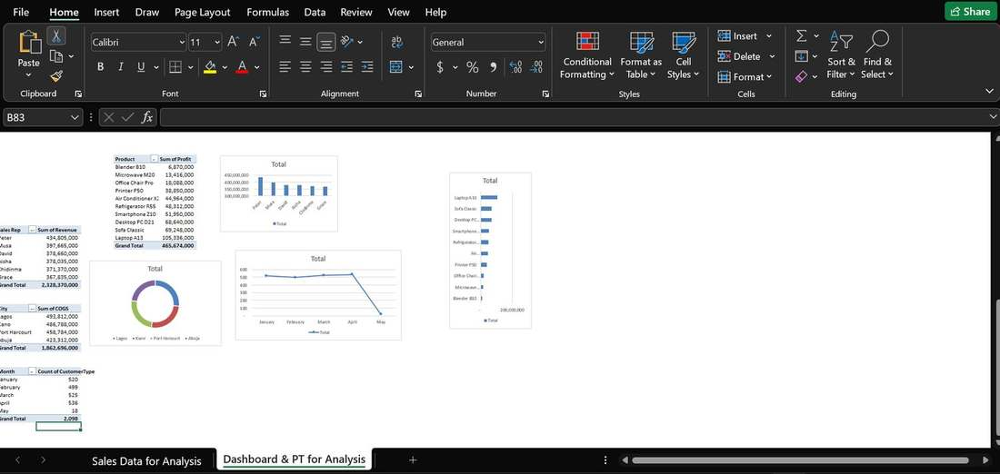
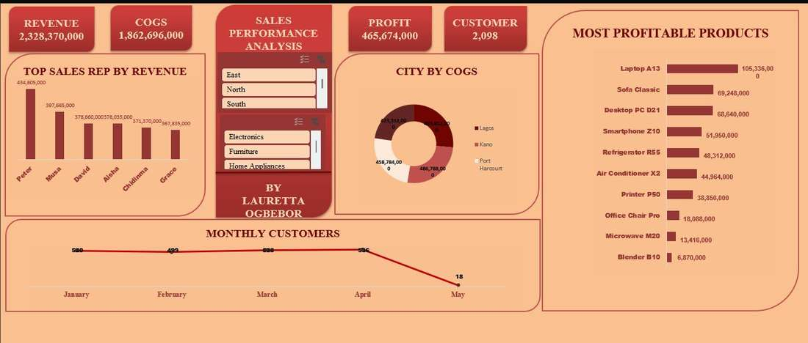

Building my first sales dashboard from scratch
Peter led all six sales reps with over 434 million in revenue, Laptop A13 outperformed every other product at over 105 million in profit, and monthly customer counts held steady between 500 and 536 before a sharp drop that's worth flagging to whoever owns that number.
This was the very first data project I built end to end: a regional sales dataset covering products, sales reps, cities, and customer types, with nothing pre summarized for me.
I added calculated columns directly inside an Excel table for Revenue (Unit Price times Quantity), COGS (Cost Price times Quantity), and Profit (Revenue minus COGS), with Cost Price worked out as eighty percent of Unit Price across the dataset. From there I built pivot tables using aggregate functions like SUM and COUNTA to summarize revenue by sales rep, profit by product, COGS by city, and customer counts by month.
Each pivot table got its own chart, bar charts for revenue and profit, a donut chart for COGS by city, a line chart for monthly customers, and everything came together into a single dashboard with KPI cards and slicers for region and product category.


